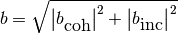

Basic Nuclear Data – pyne.data¶
This module provides a top-level interface for a variety of basic nuclear data needs. This aims to provide quick access to very high fidelity data. Usually values are taken from the nuc_data.h5 library.
All functionality may be found in the data module:
from pyne import data
Atomic Mass¶
- pyne.data.atomic_mass(nuc)¶
Finds the atomic mass of a nuclide in [amu].
Parameters : nuc : int or str
Input nuclide.
Returns : mass : float
Atomic mass of this nuclide [amu].
Notes
If the nuclide is not found, the A-number is returned as a float.
- pyne.data.atomic_mass_map¶
A mapping from zzaaam-nuclides to their mass weights. This is used by atomic_mass() under the hood.
Natural Abundance Ratios¶
- pyne.data.natural_abund(nuc)¶
Finds the natural abundance of a nuclide.
Parameters : nuc : int or str
Input nuclide.
Returns : abund : float
Natural abundance of this nuclide.
Notes
If the nuclide is not found, abundance is 0.
- pyne.data.natural_abund_map¶
A mapping from zzaaam-nuclides to their mass weights. This is used by natural_abund() under the hood.
Atomic Data¶
- pyne.data.calculate_xray_data(nuc, k_conv, l_conv)¶
Calculates X-ray intensities for a given atom with k and l conversion intensities
Parameters : nuc : int or str
Input nuclide.
k_conv : float
k electron converion coefficient arbitrary units
l_conv : float
l electron converion coefficient arbitrary units
Returns : arr : vector of pairs
Vector of pairs containing the four primary X-rays and their intensities: Ka1, Ka2, Kb, L
Decay Data¶
- pyne.data.half_life(nuc)¶
Finds the half-life of a nuclide in [seconds].
Parameters : nuc : int or str
Input nuclide, if metastable is false this uses state_id
use_metastable : bool
Assume state of input nuc_id refers to metastable state. Defaults to True.
Returns : hl : float
Half-life of this nuclide [seconds].
Notes
If the nuclide is not found, the nuclide is assumed to be stable.
Half life reported for a level in ENSDF level data.
- pyne.data.decay_const(nuc)¶
Finds the decay constant of a nuclide in [1/seconds].
Parameters : nuc : int or str
Input nuclide, if metastable is false this uses state_id
use_metastable : bool
Assume state of input nuc_id refers to metastable state. Defaults to True.
Returns : dc : float
Decay constant of this nuclide [1/seconds].
Notes
If the nuclide is not found, the nuclide is assumed to be stable.
- pyne.data.branch_ratio(from_nuc, to_nuc, use_metastable=True)¶
Finds a branch ratio for a from -> to nuclide pair [fraction].
Parameters : from_nuc : int or str
Parent nuclide, if metastable is false this uses state id
to_nuc : int or str
Child nuclide, if metastable is false this uses state id
use_metastable : bool
Assume state of input nuc_id refers to metastable state. Defaults to True.
Returns : br : float
Branch ratio of this nuclide pair [fraction].
Notes
If this pair is not found, it is assumed to be impossible, and the branch ratio is set to zero.
Branch ratio reported for a reaction in ENSDF level data. This is not necessarily equivalent to the value reported in a decay dataset by decay_branch_ratio but it should be.
- pyne.data.state_energy(nuc, use_metastable=True)¶
Finds the excitation energy [MeV] of a nuclide in a given state.
Parameters : nuc : int or str
Input nuclide, if metastable is false this uses state id
use_metastable : bool
Assume state of input nuc_id refers to metastable state. Defaults to True
Returns : se : float
Excitation energy of this nuclide [MeV].
Notes
If the nuclide is not found, the nuclide is assumed to be stable.
- pyne.data.decay_children(nuc, use_metastable=True)¶
Finds the decay children of a nuclide.
Parameters : nuc : int or str
Input nuclide, if metastable is false this uses state id
use_metastable : bool
Assume state of input nuc_id refers to metastable state. Defaults to True
Returns : dc : set of ints
Decay children in id form.
Notes
If the nuclide is not found or is stable, the empty set is returned.
- pyne.data.id_from_level(nuc, level, special="")¶
return the state_id for input energy level
Parameters : nuc : int
Input nuclide
level : double
energy level of state
special : str
special level denotation. This is a single A-Z character corresponding to a group of levels and associated gammas with no reference to the GS
Returns :
——- :
nuc : int
state_id of state
- pyne.data.metastable_id(nuc, level=1)¶
return the nuc_id of a metastable state
Parameters : nuc : int
Input nuclide
level : int
integer metastable state
Returns : nuc : int
state_id of metastable state
- pyne.data.decay_half_life(from_nuc, to_nuc)¶
Returns the half life from ENSDF decay dataset parent data
Parameters : from_nuc : int
parent nuclide in state_id form
to_nuc : int
child nuclide in state_id form
Returns : half_life : double
half life in seconds
error : double
Error in seconds
- pyne.data.decay_half_life_byparent(parent)¶
Returns a list half lives from ENSDF decay dataset parent data
Parameters : parent : int
parent nuclide in state_id form
Returns : half_lives : array of pairs
An array of half lives and their errors for a given parent nuclide
- pyne.data.decay_branch_ratio(from_nuc, to_nuc)¶
Returns the branch ratio from ENSDF decay dataset data
Parameters : from_nuc : int
parent nuclide in state_id form
to_nuc : int
child nuclide in state_id form
Returns : ratio : double
branching ratio
- pyne.data.decay_branch_ratio_byparent(parent)¶
Returns a list branching ratios from ENSDF decay dataset data for a given parent.
Parameters : parent : int
parent nuclide in state_id form
Returns : ratios : array of doubles
An array of half lives and their errors for a given parent nuclide
- pyne.data.decay_photon_branch_ratio(from_nuc, to_nuc)¶
Returns the photon branch ratio from ENSDF decay dataset data
Parameters : from_nuc : int
parent nuclide in state_id form
to_nuc : int
child nuclide in state_id form
Returns : ratio : double
photon branching ratio
- pyne.data.decay_photon_branch_ratio_byparent(parent)¶
Returns a list of photon branch ratios from ENSDF decay dataset parent data
Parameters : parent : int
parent nuclide in state_id form
Returns : half_lives : array of pairs
An array of photon branching ratios and their errors for a given parent nuclide
- pyne.data.decay_beta_branch_ratio(from_nuc, to_nuc)¶
Returns the branch ratio from ENSDF decay dataset data
Parameters : from_nuc : int
parent nuclide in state_id form
to_nuc : int
child nuclide in state_id form
Returns : ratio : double
branching ratio
- pyne.data.decay_beta_branch_ratio_byparent(parent)¶
Returns a list of beta branch ratios from ENSDF decay dataset parent data
Parameters : parent : int
parent nuclide in state_id form
Returns : ratios : array of pairs
An array of beta branching ratios and their errors for a given parent nuclide
- pyne.data.gamma_energy(parent)¶
Returns a list of gamma ray energies from ENSDF decay dataset from a given parent
Parameters : parent : int
parent nuclide in state_id form
Returns : ratios : array of pairs
An array of gamma ray energies and errors
- pyne.data.gamma_photon_intensity(parent)¶
Returns a list of gamma ray photon intensities from ENSDF decay dataset from a given parent
Parameters : parent : int
parent nuclide in state_id form
Returns : ratios : array of pairs
An array of gamma ray photon intensities and errors
This intensity is just the relative intensity for different photons in the same dataset. It needs to be multiplied by the output of decay_photon_branch_ratio() to give the percentage of parent decays.
- pyne.data.gamma_conversion_intensity(parent)¶
Returns a list of gamma ray conversion intensities from ENSDF decay dataset from a given parent
Parameters : parent : int
parent nuclide in state_id form
Returns : ratios : array of pairs
An array of gamma ray conversion intensities and errors
- pyne.data.gamma_total_intensity(parent)¶
Returns a list of gamma ray total intensities from ENSDF decay dataset from a given parent
Parameters : parent : int
parent nuclide in state_id form
Returns : ratios : array of pairs
An array of gamma ray total intensities and errors
- pyne.data.gamma_from_to_byparent(parent)¶
Returns a list of gamma ray level pairs from ENSDF decay dataset from a given parent. This makes it possible to calculate coincidence rates.
Parameters : parent : int
parent nuclide in state_id form
Returns : ratios : array of pairs
An array of gamma ray level pairs in state_id form
- pyne.data.gamma_from_to_byen(en, enerror=None)¶
Returns a list of gamma ray level pairs from ENSDF decay dataset based on gamma-ray energy.
Parameters : en : double
gamma ray energy in keV
enerror : double
gamma ray energy error (range which you want to search) this defaults to 1% of the energy if it is not provided
Returns : ratios : array of pairs
An array of gamma ray level pairs in state_id form
- pyne.data.gamma_parent(en, enerror=None)¶
Returns a list of gamma ray parents from ENSDF decay dataset based on gamma-ray energy.
Parameters : en : double
gamma ray energy in keV
enerror : double
gamma ray energy error (range which you want to search) this defaults to 1% of the energy if it is not provided
Returns : ratios : array of ints
An array of gamma ray parents in state_id form
- pyne.data.gamma_xrays(parent)¶
Returns an array of arrays of xrays associated with the gamma rays from an input parent nuclide
Parameters : parent : int
parent nuclide in state_id form
Returns : ratios : array of arrays
This returns an array of length 4 arrays containing pairs of energies and intensities of the following X-rays: Ka1, Ka2, Kb, L
- pyne.data.alpha_energy(parent)¶
Returns a list of alpha energies from ENSDF decay dataset from a given parent
Parameters : parent : int
parent nuclide in state_id form
Returns : ratios : array of pairs
An array of alpha energies and errors
- pyne.data.alpha_intensity(parent)¶
Returns a list of alpha intensities from ENSDF decay dataset from a given parent
Parameters : parent : int
parent nuclide in state_id form
Returns : ratios : array of pairs
An array of alpha intensities and errors
- pyne.data.alpha_parent(en, enerror=None)¶
Returns a list of alpha parents from ENSDF decay dataset based on alpha energy.
Parameters : en : double
alpha energy in keV
enerror : double
alpha energy error (range which you want to search) this defaults to 1% of the energy if it is not provided
Returns : ratios : array of ints
An array of alpha parents in state_id form
- pyne.data.alpha_child_byen(en, enerror=None)¶
Returns a list of alpha children from ENSDF decay dataset based on alpha energy.
Parameters : en : double
alpha energy in keV
enerror : double
alpha energy error (range which you want to search) this defaults to 1% of the energy if it is not provided
Returns : ratios : array of ints
An array of alpha children in state_id form
- pyne.data.alpha_child_byparent(parent)¶
Returns a list of alpha children from ENSDF decay dataset based on alpha parent.
Parameters : parent : int
parent nuclide in state_id form
Returns : ratios : array of ints
An array of alpha children in state_id form
- pyne.data.beta_endpoint_energy(parent)¶
Returns a list of beta endpoint energies from ENSDF decay dataset based on parent nuclide.
Parameters : parent : int
parent nuclide in state_id form
Returns : ratios : array of ints
An array of beta endpoint energies and errors
- pyne.data.beta_average_energy(parent)¶
Returns a list of beta average energies from ENSDF decay dataset based on parent nuclide.
Parameters : parent : int
parent nuclide in state_id form
Returns : ratios : array of ints
An array of beta average energies and errors
- pyne.data.beta_intensity(parent)¶
Returns a list of beta intensities from ENSDF decay dataset based on parent nuclide.
Parameters : parent : int
parent nuclide in state_id form
Returns : ratios : array of ints
An array of beta intensities and errors
- pyne.data.beta_parent(en, enerror=None)¶
Returns a list of beta minus parents from ENSDF decay dataset based on beta energy.
Parameters : en : double
beta- energy in keV
enerror : double
beta- energy error (range which you want to search) this defaults to 1% of the energy if it is not provided
Returns : ratios : array of ints
An array of beta minus parents in nuc_id form
- pyne.data.beta_child_byen(en, enerror=None)¶
Returns a list of beta minus children from ENSDF decay dataset based on beta energy.
Parameters : en : double
beta- energy in keV
enerror : double
beta- energy error (range which you want to search) this defaults to 1% of the energy if it is not provided
Returns : ratios : array of ints
An array of beta minus children in nuc_id form
- pyne.data.beta_child_byparent(parent)¶
Returns a list of beta minus children from ENSDF decay dataset based on parent.
Parameters : parent : int
parent nuclide in state_id form
Returns : ratios : array of ints
An array of beta- children in state_id form
- pyne.data.ecbp_endpoint_energy(parent)¶
Returns a list of beta plus endpoint energies from ENSDF decay dataset from a given parent.
Parameters : parent : int
parent nuclide in state_id form
Returns : ratios : array of pairs
An array of beta plus endpoint energies and errors
- pyne.data.ecbp_average_energy(parent)¶
Returns a list of beta plus average energies from ENSDF decay dataset from a given parent.
Parameters : parent : int
parent nuclide in state_id form
Returns : ratios : array of pairs
An array of beta plus average energies and errors
- pyne.data.ec_intensity(parent)¶
Returns a list of electron capture intensisities from ENSDF decay dataset from a given parent.
Parameters : parent : int
parent nuclide in state_id form
Returns : ratios : array of pairs
An array of electron capture intensisities and errors
- pyne.data.beta_plus_intensity(parent)¶
Returns a list of beta plus intensities from ENSDF decay dataset from a given parent.
Parameters : parent : int
parent nuclide in state_id form
Returns : ratios : array of pairs
An array of beta plus intensities and errors
- pyne.data.ecbp_parent(en, enerror=None)¶
Returns a list of beta plus/electron capture parents from ENSDF decay dataset based on beta energy.
Parameters : en : double
beta- energy in keV
enerror : double
beta- energy error (range which you want to search) this defaults to 1% of the energy if it is not provided
Returns : ratios : array of ints
An array of beta plus/electron capture children in nuc_id form
- pyne.data.ecbp_child_byen(en, enerror=None)¶
Returns a list of beta plus/electron capture parents from ENSDF decay dataset based on beta energy.
Parameters : en : double
beta- energy in keV
enerror : double
beta- energy error (range which you want to search) this defaults to 1% of the energy if it is not provided
Returns : ratios : array of ints
An array of beta plus/electron capture children in state_id form
- pyne.data.ecbp_child_byparent(parent)¶
Returns a list of beta plus children from ENSDF decay dataset based on parent.
Parameters : parent : int
parent nuclide in nuc_id form in state_id form
Returns : ratios : array of ints
An array of beta+ children in state_id form
- pyne.data.ecbp_xrays(parent)¶
Returns an array of arrays of xrays associated with the electron capture and beta plus decays from an input parent nuclide
Parameters : parent : int
parent nuclide
Returns : ratios : array of arrays
This returns an array of length 4 arrays containing pairs of energies and intensities of the following X-rays: Ka1, Ka2, Kb, L
Neutron Scattering Lengths¶
- pyne.data.b(nuc)¶
Finds the bound scattering length of a nuclide in [cm].
Parameters : nuc : int or str
Input nuclide.
Returns : b : float
Bound scattering length of nuc [cm].
Notes
If nuc is not found, the value for a nuclide with the same A-number is used instead. If still no value is found, the an isotope of the same element as nuc is used. If still no values are found, zero is returned.
This value is computed from the coherent and incoherent scattering lengths as follows:

- pyne.data.b_map¶
A mapping from zzaaam-nuclides to their bound neuton scattering lengths. This is used by b() under the hood.
- pyne.data.b_coherent(nuc)¶
Finds the coherent bound scattering length of a nuclide in [cm].
Parameters : nuc : int or str
Input nuclide.
Returns : bc : complex
Coherent bound scattering length of nuc [cm].
Notes
If nuc is not found, the value for a nuclide with the same A-number is used instead. If still no value is found, the an isotope of the same element as nuc is used. If still no values are found, zero is returned.
- pyne.data.b_coherent_map¶
A mapping from zzaaam-nuclides to their bound coherent neuton scattering lengths. This is used by b_coherent() under the hood.
- pyne.data.b_incoherent(nuc)¶
Finds the incoherent bound scattering length of a nuclide in [cm].
Parameters : nuc : int or str
Input nuclide.
Returns : bi : complex
Incoherent bound scattering length of nuc [cm].
Notes
If nuc is not found, the value for a nuclide with the same A-number is used instead. If still no value is found, the an isotope of the same element as nuc is used. If still no values are found, zero is returned.
- pyne.data.b_incoherent_map¶
A mapping from zzaaam-nuclides to their bound incoherent neuton scattering lengths. This is used by b_coherent() under the hood.